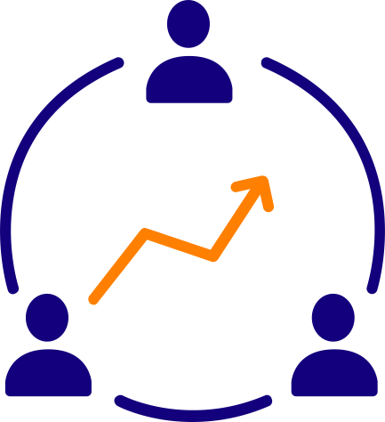

Conselho Administrativo

Presidente
Paulo Haus Martins
Vice-Presidente
Carmen Avolio
Fundação Estudos do Mar Fundação Oscar Niemeyer Fundação Homem do Mar
Conselho Fiscal
José Carlos Santos da Cruz
Câmaras Temáticas
Uma oportunidade para entender e discutir sobre a realidade que envolve a sustentabilidade das organizações da Sociedade Civil no panorama regional e nacional, traçar os cenários futuros previsíveis e obter proposições, permitindo o reposicionamento estratégico das instituições do Terceiro Setor com o acesso a informações e análises de alto nível.

Parceiros